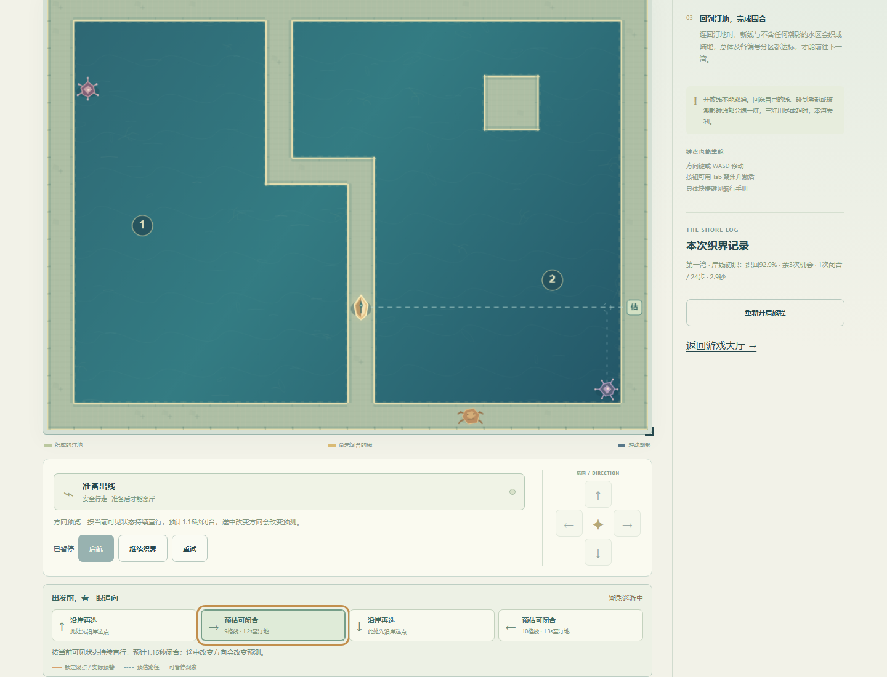
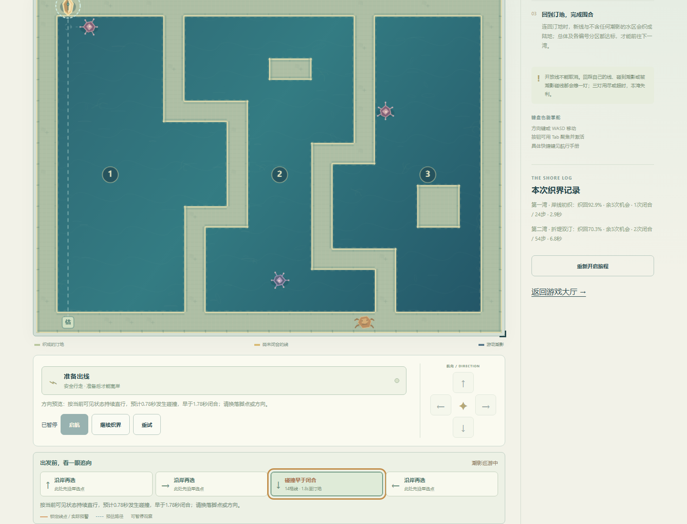
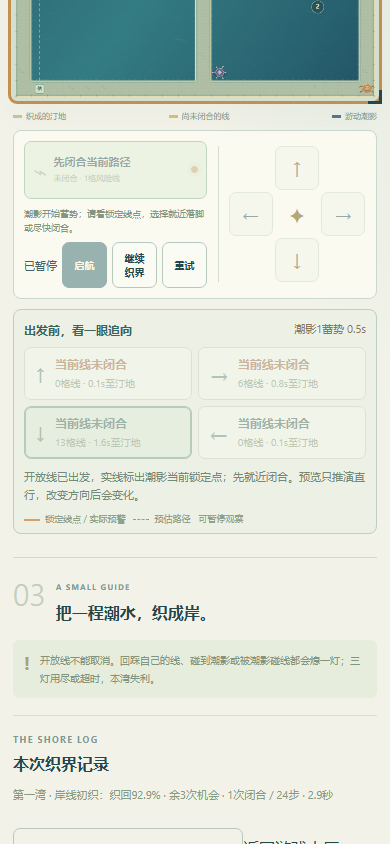
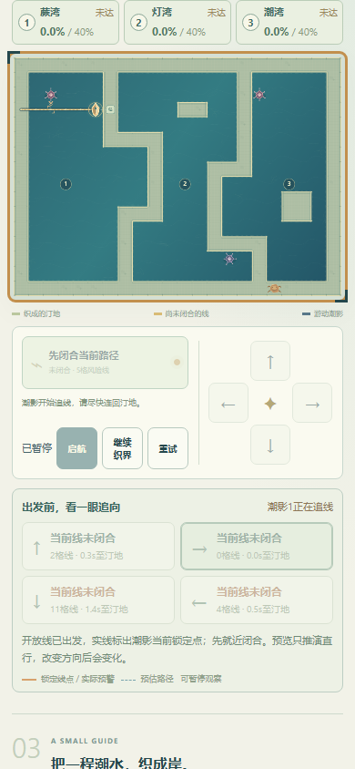
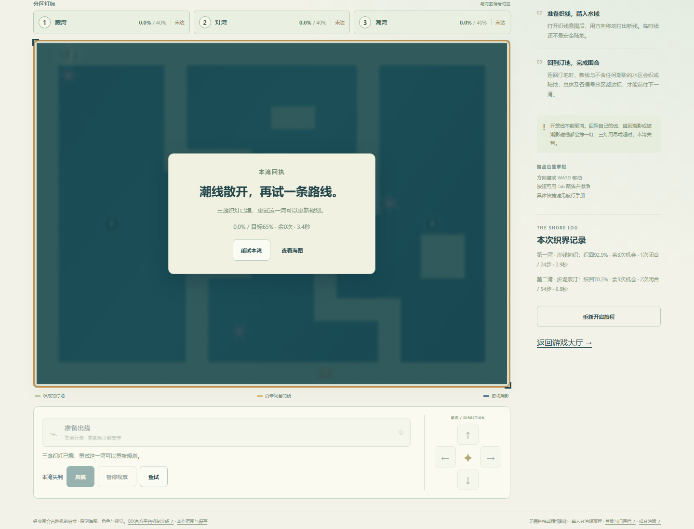
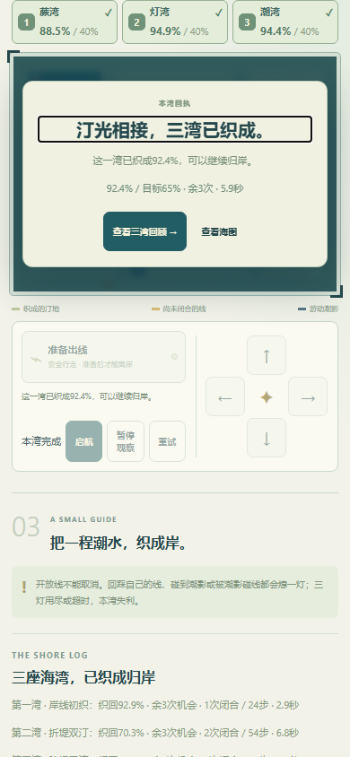
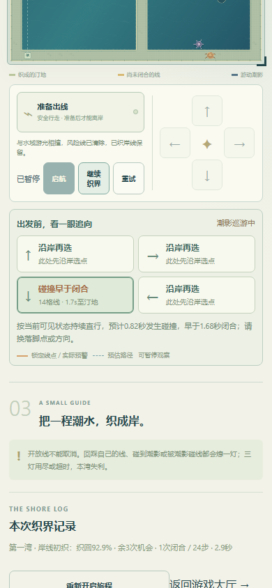

质量级别：有实际敌位风险的三湾机制候选，非成熟成品。独立审查证实v2默认固定路线不读敌位，原始状态12/12无损，但自然移相会真的碰线；不是敌人永远无威胁。普通UI无暂停测得v2第二湾墙钟3.453s、局内3.40s，故不能以模拟快跑解释短路线。
本轮只改一项：进阶湾开放线触发0.5秒可视原地蓄势，随后同原速度追最近线点。教学保持原行为，不提速、不随机、不强制等待。四向只读直线推演可在出发前比较碰撞和闭合；途中拖延/转弯改变结果。当前真实锁定线点和预估路径分开画，预估不是保证。
策略A为远岸长切：根据当前敌位挑更远的出发/落脚，收益大、暴露久。策略B借岛/堤短闭合：较短暴露创造新岸，分段推进、换位更多。模型同网格自然移相1.28s时，长线首刀由(11,11)→(21,11)改成(0,3)→(8,3)；短线也会因相位放弃不利浮岛。两策略在50/100/200ms均可解，输入间隔严格按.02s子步累计，未利用update大dt截断。上述为明确模型辅助，不是两套真人实玩。
Windows / Chromium147，本地真实页面；原生方向/空格、预览按钮，正常P暂停用于模型预测规划和截图。没有注入位置、时间、胜负或完成档。墙钟含暂停，局内计时只计活动，因此两者不等价。暂停操作墙钟含工具按钮交互观测、为约数，不把差额解释为真人反应速度或设备性能。
| 湾 | 闭合 / 步 | 结算局内 | 墙钟 | 暂停操作约 |
|---|---|---|---|---|
| 1 | 1 / 24 | 2.92s | 3.188s | 0.265s |
| 2 | 2 / 54 | 6.76s | 8.516s | 1.874s |
| 3 | 3 / 47 | 5.88s | 7.344s | 1.564s |
第二湾先根据敌位选(11,11)向右长切，再换到(11,9)向左，均在按钮上看到可闭合预览。第三湾失败分支在三次红色预览后仍直行，1.76/2.56/3.36秒被潮影真实追断并失利，刷新保持失利；确认只重试第三湾、前两湾不丢，再选不同安全出发点完成。这是故意测试危险选择的正常输入，不冒充玩家无意失误。
第三湾新辅助路线5.88秒，低于v2的7.08秒。改进依据是旧固定长切被追断、可见风险、敌位变化导致选择变化，绝非更长时间或固定多刀等于深度。网格小、预测/暂停辅助强、确定性高，熟练背板仍可能很快；真人乐趣与长期耐玩性仍未知。
真实预警状态开放线刷新先暂停，enemy状态/倒计时/线/网格/计时保留，旧输入不复活；实际完成档保留并刷新，取消新旅程不清记录。独立v3键不触碰真实v1/v2字节；写入失败/恢复、坏档保护是独立浏览器故障夹具。390CSS原生touch模拟预览不移动，方向按住/释放/取消、织线和暂停通过；不是实际手机性能或手感验收。本作无音频。
独立反例聚合 · 真实墙钟核对 · 模型矩阵与因果/危险对照 · 逐次可见选择及真实追断 · 存储故障夹具 · 旅程7组 · 三版本入口及触控短验 · 其他43推荐函数回归 · 规则与兼容
不新增第45项；其他43项、v1/v2、四个停止项目、原72图鉴均保留。当前应收束为可供真人试用的机制候选，继续改进应依具体玩家反馈，不无限搜索路线或拉长时长。






